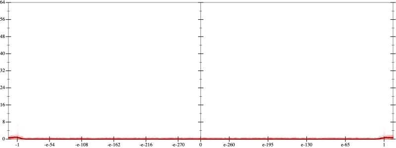
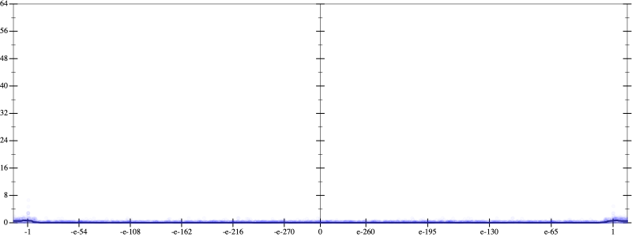
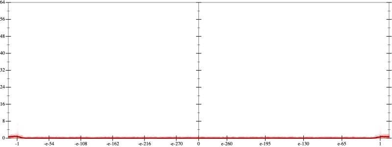
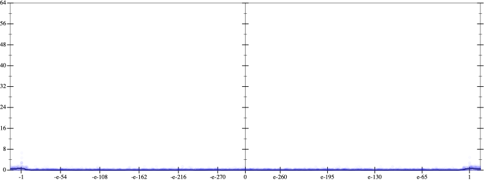

Initial program 0.1
\[\left(\left(-2.1875 \cdot x + 19.6875 \cdot \left(\left(x \cdot x\right) \cdot x\right)\right) + -43.3125 \cdot \left(\left(\left(\left(x \cdot x\right) \cdot x\right) \cdot x\right) \cdot x\right)\right) + 26.8125 \cdot \left(\left(\left(\left(\left(\left(x \cdot x\right) \cdot x\right) \cdot x\right) \cdot x\right) \cdot x\right) \cdot x\right)\]
Taylor expanded around 0 0.1
\[\leadsto \left(\left(-2.1875 \cdot x + 19.6875 \cdot \left(\left(x \cdot x\right) \cdot x\right)\right) + -43.3125 \cdot \left(\left(\left(\left(x \cdot x\right) \cdot x\right) \cdot x\right) \cdot x\right)\right) + 26.8125 \cdot \left(\left(\left(\left(\color{blue}{{x}^{3}} \cdot x\right) \cdot x\right) \cdot x\right) \cdot x\right)\]
Applied simplify0.1
\[\leadsto \color{blue}{\left(\left(x \cdot x\right) \cdot \left(x \cdot x\right)\right) \cdot \left(\left(x \cdot x\right) \cdot \left(26.8125 \cdot x\right) + x \cdot -43.3125\right) + x \cdot \left(\left(19.6875 \cdot x\right) \cdot x + -2.1875\right)}\]
- Using strategy
rm Applied pow20.1
\[\leadsto \left(\left(x \cdot x\right) \cdot \color{blue}{{x}^{2}}\right) \cdot \left(\left(x \cdot x\right) \cdot \left(26.8125 \cdot x\right) + x \cdot -43.3125\right) + x \cdot \left(\left(19.6875 \cdot x\right) \cdot x + -2.1875\right)\]
Applied pow20.1
\[\leadsto \left(\color{blue}{{x}^{2}} \cdot {x}^{2}\right) \cdot \left(\left(x \cdot x\right) \cdot \left(26.8125 \cdot x\right) + x \cdot -43.3125\right) + x \cdot \left(\left(19.6875 \cdot x\right) \cdot x + -2.1875\right)\]
Applied pow-prod-up0.1
\[\leadsto \color{blue}{{x}^{\left(2 + 2\right)}} \cdot \left(\left(x \cdot x\right) \cdot \left(26.8125 \cdot x\right) + x \cdot -43.3125\right) + x \cdot \left(\left(19.6875 \cdot x\right) \cdot x + -2.1875\right)\]
- Using strategy
rm Applied add-cbrt-cube0.1
\[\leadsto {x}^{\left(2 + 2\right)} \cdot \left(\left(x \cdot x\right) \cdot \color{blue}{\sqrt[3]{\left(\left(26.8125 \cdot x\right) \cdot \left(26.8125 \cdot x\right)\right) \cdot \left(26.8125 \cdot x\right)}} + x \cdot -43.3125\right) + x \cdot \left(\left(19.6875 \cdot x\right) \cdot x + -2.1875\right)\]
Applied add-cbrt-cube0.1
\[\leadsto {x}^{\left(2 + 2\right)} \cdot \left(\color{blue}{\sqrt[3]{\left(\left(x \cdot x\right) \cdot \left(x \cdot x\right)\right) \cdot \left(x \cdot x\right)}} \cdot \sqrt[3]{\left(\left(26.8125 \cdot x\right) \cdot \left(26.8125 \cdot x\right)\right) \cdot \left(26.8125 \cdot x\right)} + x \cdot -43.3125\right) + x \cdot \left(\left(19.6875 \cdot x\right) \cdot x + -2.1875\right)\]
Applied cbrt-unprod0.1
\[\leadsto {x}^{\left(2 + 2\right)} \cdot \left(\color{blue}{\sqrt[3]{\left(\left(\left(x \cdot x\right) \cdot \left(x \cdot x\right)\right) \cdot \left(x \cdot x\right)\right) \cdot \left(\left(\left(26.8125 \cdot x\right) \cdot \left(26.8125 \cdot x\right)\right) \cdot \left(26.8125 \cdot x\right)\right)}} + x \cdot -43.3125\right) + x \cdot \left(\left(19.6875 \cdot x\right) \cdot x + -2.1875\right)\]
Applied simplify0.1
\[\leadsto {x}^{\left(2 + 2\right)} \cdot \left(\sqrt[3]{\color{blue}{\left({x}^{3} \cdot {x}^{3}\right) \cdot {\left(x \cdot 26.8125\right)}^{3}}} + x \cdot -43.3125\right) + x \cdot \left(\left(19.6875 \cdot x\right) \cdot x + -2.1875\right)\]
 
